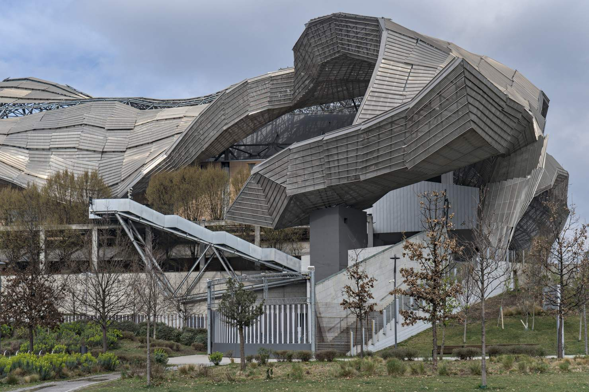
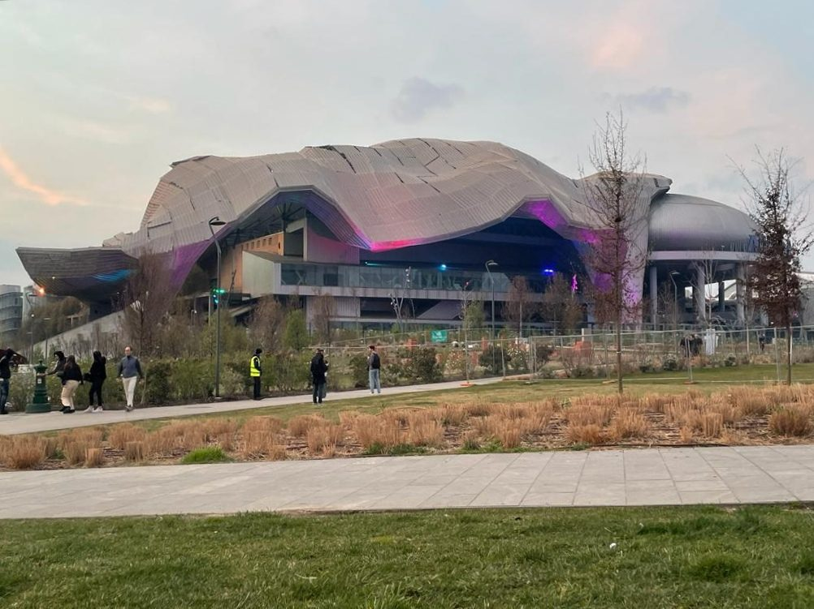

Venue · Congress centre
Allianz MiCo
- Type
- Congress centre
- Location
- Milan, Italy
- Address
- Piazzale Carlo Magno 1, 20149 Milan
- Exhibition space
- 50,000 m²
- Halls
- Official micomilano.it: more than 50,000 m² of exhibition space and 60 meeting rooms. Fondazione Fiera Milano also cites 65 rooms and 18,000 people simultaneously; an investor presentation cites 54,000 m² and 21,000 seats. Those conflicting totals are not stored as a single capacity_max_delegates figure.
- Official website
- https://www.micomilano.it/
About
Milan's main purpose-built congress centre (Allianz MiCo). The venue's official site describes more than 50,000 m² of exhibition space and 60 meeting rooms, with a legal address at Piazzale Carlo Magno 1, 20149 Milan. The owner, Fondazione Fiera Milano, also publishes 65 rooms and 18,000 people simultaneously; an investor presentation cites 54,000 m² and 21,000 seats. Headline exhibition area follows the venue site as 'more than 50,000 m²' (stored as 50,000 with that caveat). Coordinates are the Nominatim pin for the official street address. Competitor marketplace listings were not used.
Sources
- Official source — https://www.micomilano.it/
- Official source — https://www.fondazionefieramilano.it/